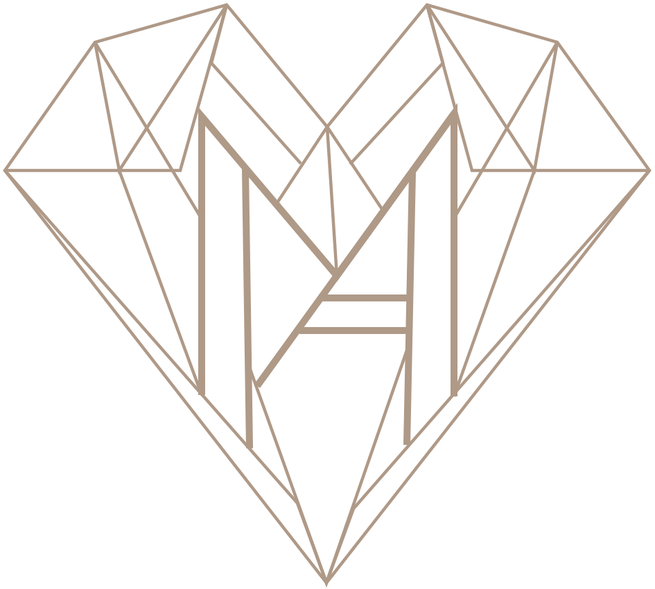
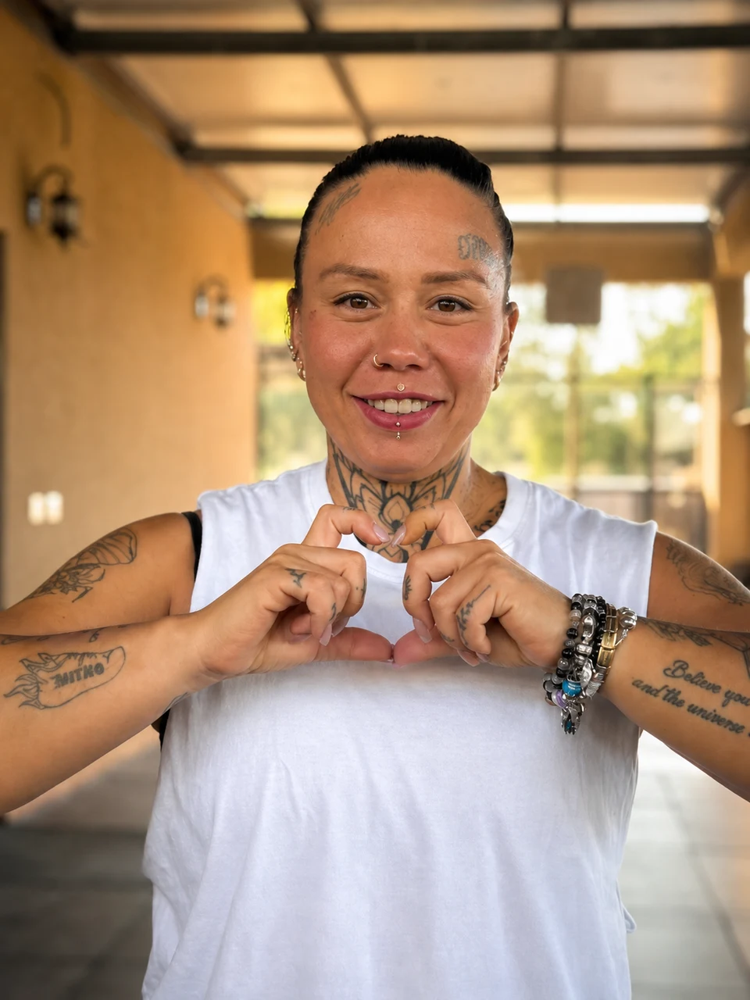
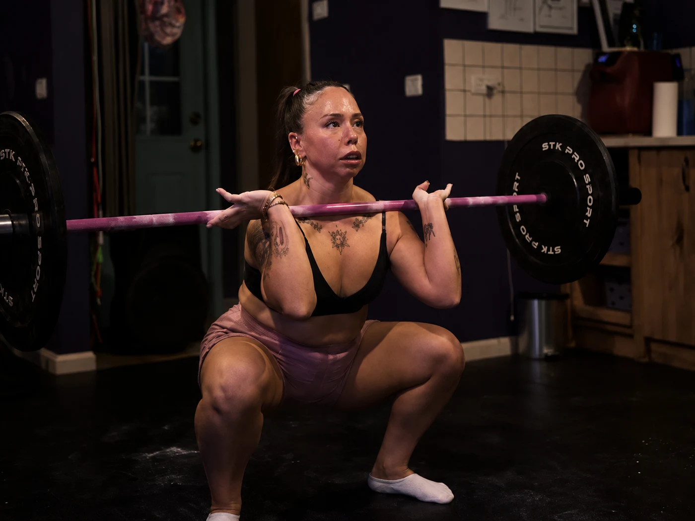
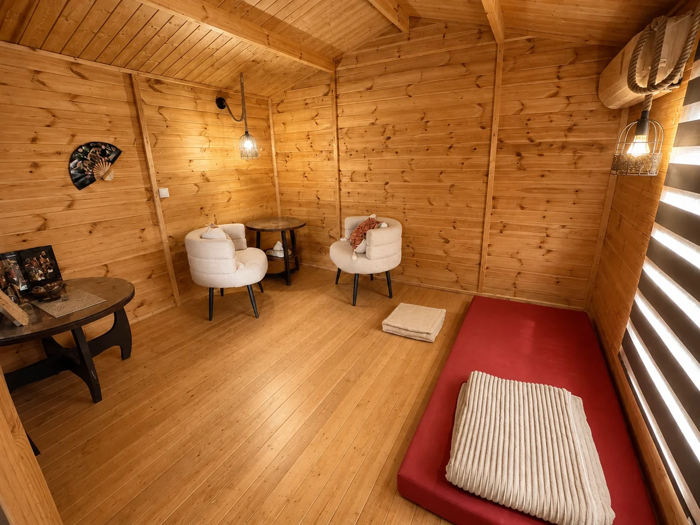

אימוני כוח
לבנות כוח זה הרבה מעבר לכמה משקל הצלחנו להרים.
לומדים לעבוד נכון, לסמוך על הגוף ולגלות שאנחנו מסוגלים להרבה יותר ממה שחשבנו.
גלו את אימוני הכוח
MamAlinaלבנות כוח זה הרבה מעבר לכמה משקל הצלחנו להרים.
לומדים לעבוד נכון, לסמוך על הגוף ולגלות שאנחנו מסוגלים להרבה יותר ממה שחשבנו.
גלו את אימוני הכוחלפעמים הדרך לריפוי מתחילה דווקא בשחרור.
דרך הנשימה אנחנו פוגשים את מה שהגוף והנפש נושאים איתם ויוצרים מרחב לשחרור, חיבור וריפוי.
גלו את עולם הנשימה
אני אוהבת אנשים.
אני אוהבת לראות את הרגע שבו מישהו מגלה על עצמו משהו חדש - מצליח לעשות משהו שהיה בטוח שהוא לא מסוגל, מעז לפגוש מקום שממנו ברח, או פשוט עוצר לרגע ומקשיב לעצמו באמת.
MamAlina נולד מתוך החיבור בין שני עולמות שהם חלק בלתי נפרד ממני - כוח ונשימה.
דרך הגוף אנחנו לומדים להתחזק, להתאמץ, להתמיד ולגלות למה אנחנו מסוגלים.
דרך הנשימה אנחנו לומדים לעצור, להקשיב, לשחרר ולאפשר ריפוי.
מבחינתי אלה לא שני עולמות נפרדים.
בשניהם אנחנו לומדים לפרק אמונות מגבילות וטמפלטים ישנים שגדלנו איתם, ולפנות מקום לגרסה חזקה, חופשית ומדויקת יותר של עצמנו.
כאן לא מקטינים את עצמנו.
כאן לומדים לנשום.
כאן בונים כוח אמיתי.
אימוני כוח

האימונים מתקיימים בקבוצות בוטיק קטנות של עד חמישה מתאמנים, כדי שאוכל באמת לראות כל אחת ואחד מכם - את התנועה, הטכניקה, הקצב והמקום שממנו אתם מתחילים.
אנחנו לומדים לעבוד נכון, בונים בסיס, מדייקים טכניקה ובהדרגה מוסיפים עומס ואתגר.
לא צריך להגיע בכושר.
לא צריך להרשים אף אחד.
ולא צריך להוכיח שאתם חזקים.
בשביל זה בדיוק באים לכאן - כדי לגלות את זה.
עם הזמן משהו משתנה לא רק בגוף.
פתאום המשקל שפעם הפחיד אתכם עולה מהרצפה. התרגיל שהייתם בטוחים שלא תצליחו - קורה. והמשפט "אני לא יכולה" מתחיל לאבד מהכוח שלו.
כי הכוח שאנחנו בונים באימון לא נשאר רק באימון.
הוא הולך איתנו גם לחיים.
הצצה של 24 שניות למרחב האימון.
הסרטון לא נטען. פתחו את הסרטון ישירות.
“אלינה שמה עליי פרוז'קטור והזכירה לי שזה הזמן לבחור גם בעצמי. האתגר הפיזי והמנטלי, יחד עם תחושת ההצלחה אחרי כל אימון, גורמים לי לחזור שוב ושוב. היא רואה את מי שעומדת מולה ומזכירה לה כמה היא מסוגלת.”
“אלינה היא פצצת אנרגיה, עם המון ידע ותשוקה למה שהיא עושה. היא מאתגרת אותנו בכל אימון, ולא פעם אני מסיימת ואומרת לעצמי: וואלה, לא האמנתי שאצליח לעשות את זה. אני מרגישה שאני מתחזקת ומשתפרת מאימון לאימון.”
“אלינה, האימונים אצלך שינו לי את החיים. לא האמנתי שאצליח להתמיד באימוני כוח שלוש פעמים בשבוע — והיום זה כבר חלק מהשגרה שלי. אני מרגישה חזקה ובריאה יותר, והגוף שלי נראה ומרגיש טוב יותר.”
“שינית לי את החיים.”
נשימה וריברסינג
לפעמים הדרך לריפוי מתחילה בנשימה אחת.

אנחנו עוברים המון במהלך החיים.
חוויות, מערכות יחסים, פחדים, כאבים, אמונות שגדלנו עליהן - ולפעמים גם דברים שאנחנו בכלל לא זוכרים במילים.
אבל הגוף זוכר.
בריברסינג אנחנו עובדים עם נשימה מעגלית ורציפה. דרך הנשימה אנחנו מאפשרים לעצמנו לעצור לרגע את הרעש שבחוץ ולהתחיל להקשיב למה שקורה בפנים.
אנחנו יוצרים מרחב לריפוי.
ריפוי של מקומות שכואבים.
ריפוי של חוויות שנשארו איתנו.
ריפוי של דפוסים ואמונות שממשיכים לנהל אותנו גם כשהם כבר לא משרתים אותנו.
לא חייבים להגיע עם "בעיה".
לא צריך לדעת להסביר בדיוק מה מרגישים.
ולא צריך להגיע עם סיפור מסודר.
פשוט מתחילים לנשום.
דרך הנשימה אנחנו יכולים לפגוש תחושות, רגשות, חוויות ודפוסים שהגוף עדיין מחזיק - לתת להם מקום ולאפשר תהליך של עיבוד, שחרור וריפוי בקצב שמתאים לנו.
מבחינתי ריפוי לא אומר למחוק את מה שעברנו.
ריפוי הוא להגיע למקום שבו מה שעברנו כבר לא חייב לנהל את הדרך שבה אנחנו חיים היום.
זה אחד התחומים הקרובים ביותר לליבי.
הגוף מתחיל לצבור חוויות עוד הרבה לפני שיש לנו מילים להסביר אותן.
בעבודה עם תינוקות וילדים אנחנו יוצרים מרחב בטוח להתפתחות, חיבור וריפוי, בדרך שמותאמת לגיל, לשלב ההתפתחותי ולצורך של הילד.
העבודה יכולה לגעת בחוויות סביב היריון ולידה, בקשיים רגשיים והתנהגותיים, בקשיי למידה, במערכות יחסים, בוויסות ובהתפתחות הרגשית והפיזית של הילד.
אני מאמינה שככל שאנחנו מאפשרים מקום לריפוי כבר בגיל צעיר, אנחנו נותנים לילד אפשרות לגדול עם פחות משקל שהוא לא צריך להמשיך לשאת איתו.
כי העבודה שאנחנו עושים היום היא לא רק בשביל הילד שהוא עכשיו.
היא גם בשביל המבוגר שהוא יגדל להיות.
ילדים בריאים רגשית - בוגרים בריאים רגשית.
נשימה קטנה משנה עולם שלם.
יכול להיות שאתם יודעים בדיוק למה הגעתם לכאן.
ויכול להיות שאתם פשוט מרגישים שמשהו צריך להשתנות - ועדיין לא יודעים לתת לזה שם.
גם זה בסדר.
שלחו לי הודעה.
נדבר, אשאל אתכם כמה שאלות ונבין יחד מה נכון עבורכם עכשיו - כוח, נשימה, ריפוי, או פשוט הצעד הראשון בדרך חזרה לעצמכם.
מחכה לכם,
אלינה ❤️